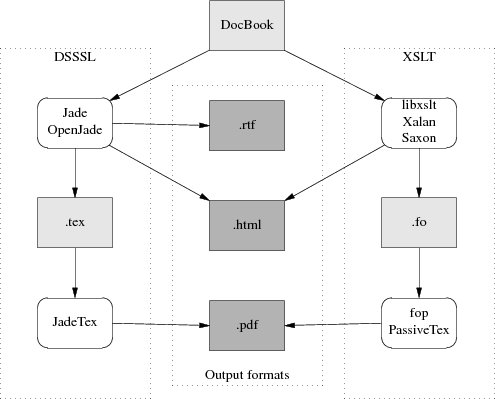

In previous sections, I have thrown away a lot of DocBook's history. XML has an older brother, SGML or Standard Generalized Markup Language.
Until mid-2002, no discussion of DocBook would have been complete without a long excursion into SGML, the differences between SGML and XML, and detailed descriptions of the SGML DocBook toolchain. Life can be simpler now; an XML DocBook toolchain is available in open source, works as well as the SGML toolchain ever did, and is much easier to use. If you don't think you'll ever have to deal with old SGML-Docbook documents, you can skip the remainder of this section.
DocBook was originally an SGML application, and there was an SGML-based DocBook toolchain that is now moribund. There are minor differences between the DocBook SGML DTD and the DocBook XML DTD, but for an introductory discussion we can ignore them. The only one that's normally user-visible is that in SGML contentless tags did not need to have a trailing slash added to them before the closing >. (Requiring the trailing / means XML parsers can be a lot simpler, because they don't have to know about the DTD to know which opening tags need closers.)
Versions of HTML up to 4.01 (before XHTML) were SGML applications. TEI was originally an SGML application, too. The groups managing all three DTDs jumped to XML for the same reason DocBook's developers did — it's drastically simpler. SGML was extremely complex; unmanageably so, as it turns out. The specification was a dense 150 pages and it is not reliably reported that any software ever fully implemented it.
The toolchain diagram I gave earlier was simplified; it only showed the XML toolchain. Here is the historically correct version:

The DSSSL toolchain is what processed DocBook SGML. Under it, a document goes from DocBook format through one of two closely-related stylesheet engines called Jade and OpenJade. These turn it into a TeX-macro markup, which is processed by a package called JadeTeX, into DVIs, which then get turned into Postscript.
The docbook-tools project provides open-source tools for converting SGML DocBook to HTML, Postscript, and other formats. This package is shipped with Red Hat and other Linux distributions. It is maintained by Mark Galassi.
Jade is an engine used to apply DSSSL stylesheets to SGML documents. It is maintained by James Clark.
OpenJade is a community project undertaken because the founders thought James Clark's maintainance of Jade was spotty. The docbook-tools programs use OpenJade.
PassiveTeX the package of LaTeX macros that xmlto uses for producing DVI from XML-DocBook. JadeTex is the package of LaTeX macros that OpenJade uses for producing DVI from SGML-DocBook.
The DSSSL toolchain is, as far as new development goes, effectively dead. The XSLT toolchain has reached production status in mid-2002; a working version shipped in Red Hat 7.3. It's where DocBook developers are putting almost all of their effort.
The reason for the change to XML was threefold. First, SGML turned out to be too complicated to use; then, DSSSL turned out to be too complicated to live with; then, significant parts of the DSSSL toolchain turned out to be weak and irredeemably messy.
Relative to SGML, XML has a reduced feature set that is sufficient for almost all purposes but much easier to understand and build parsers for. SGML-processing tools (such as validating parsers) have to carry around support for a lot of features that DocBook and other text markup systems never actually used. Removing these features made XML simpler and XML-processing tools faster.
The language used to describe SGML DTDs is sufficiently spiky and forbidding that composing SGML DTDs was something of a black art. XML DTDs, on the other hand, can be described in a dialect of XML itself; there does not need to be a separate DTD language. An XML description of an XML DTD is called a schema; the term DTD itself will probably pass out of use as the standards for schemas firm up.
But mostly the DSSSL toolchain is dead because DSSSL itself, the SGML stylesheet description language in that toolchain, proved just too arcane for most human beings, and made stylesheets too difficult to write and modify. (It was a dialect of Scheme. Your humble editor, a LISP-head from way back, shakes his head in sad bemusement that this should drive people away.)
XML fans like to sum up all these changes with "XML: tastes great, less filling."
SGML-Tools was the name of a DTD used by the Linux Documentation Project, developed a few years ago when today's DocBook toolchains didn't exist. SGML-Tools markup was simpler, but also much less flexible than DocBook. The original SGML-Tools formatter/DTD/stylesheet(s) toolchain has been dead for some time now, but a successor called SGML-tools Lite is still maintained.
The LDP has been phasing out SGML-Tools in favor of DocBook, but it is still possible you might take over an old HOWTO. These can be recognized by the identifying header "<!doctype linuxdoc system>". If this happens to you, convert the thing to XML DocBook and give the old version a quick burial.